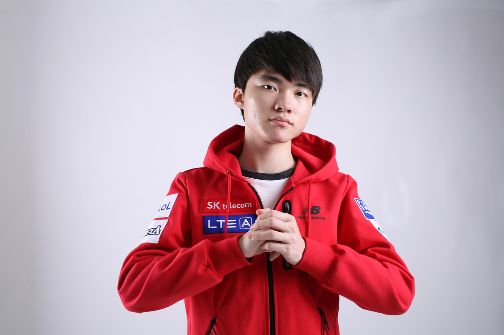

Lee Sang-hyeok, a raczej bardziej kojarzone imię "Faker" bądź "Hide on Bush", jest jedną z najbardziej znanych osób na scenie kompetetywnej LoL'a – gra on dla koreańskiej drużyny SKT T1 jako zawodnik środkowej alei. Jest on dla LoL'a tym samym czym dla koszykówki był Michael Jordan,czy dla piłki nożnej Ronaldo. Człowiek który swoimi osiągnięciami zasłużył na tytuł "Bóg" wśród graczy League of Legends. Znany jest ze swojego agresywnego stylu gry przyciągającego graczy przeciwnej drużyny, aby go powstrzymać, lecz rzadko kiedy im się to udaje. Trzykrotny misrz świata League of Legends.

Z wyglądu raczej nie przypomina Boga :)